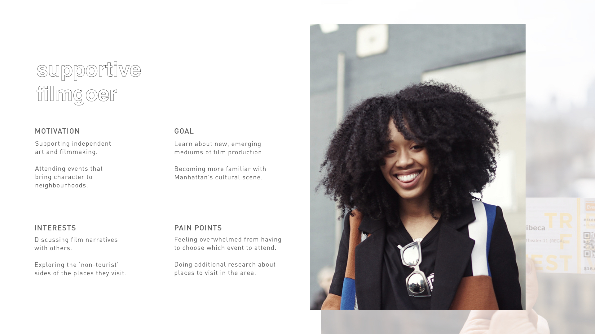
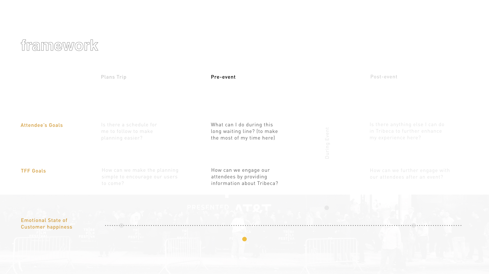

TRIBECA
FILM
FESTIVAL
Tribeca Film Festival is a 12-day festival founded in 2002 by Robert De Niro, Jane Rosenthal, and Craig Hatkoff, in response to the 9/11 tragedy. Since its establishment, Tribeca Film Festival has evolved beyond just storytelling through film, into a multi-platform cultural event that includes immersive VR and games.
PROPOSAL: TRIBECA EXPLORE
An addition to the existing Tribeca Film Festival application that extends the screening experience beyond the venue to explore the diverse urban establishments of Manhattan


Team
Helen Bezverhaia
Nicole Mak
Serena Ho
My Roles
Research
Prototyping
Interface Design
User Interaction
Duration
Business Problem
From its conception, Tribeca Film Festival was only intended as a one-time event to heal the loss of vitality in the Tribeca Neighbourhood by bringing people together. However, it gained popularity but resulted in a lack of long-term vision and consistent identity that would differentiate them from other film festivals.
Opportunity
1 — Tribeca Film Festival has formed a deep connection with the Tribeca neighbourhood, through its original mission to revitalize the Lower Manhattan community by exposing and supporting many local businesses and artists.2 — Recently, rent has skyrocketed with the gentrification of the Tribeca Neighborhood, which has resulted in a substantial change to the character of the community in which Tribeca Film Festival takes place.
Insights
1 — There is a disconnect between the screening and the actual festival in the sense that it feels like you’re just attending a regular movie. You line up to get in, watch the film, then move on.“I’ve attended a few VIFF screenings, but my experiences were just as if you were going to the movies.”
– Vancouver Film Festival attendee
2 — The penetration of affluent businesses into the Manhattan neighbourhood has inflated its value to give bigger companies the competitive advantage to sustain their businesses. While smaller local establishments are forced to move to less-expensive areas. 3 — The once apart of Tribeca Film Festival’s Tribeca Family Festival was discontinued in 2017. Which took away with it the opportunity for local businesses to showcase themselves and establish a meaningful connection with the community.
Target Audience
From our research, we were able to identify that film festival goers who are not cinephils would want to explore the area the festival is set in. However, there is currently no support that provides them with local information during the festival. We saw an opportunity in building a stronger relationship between Tribeca Film Festival and the local businesses by targeting casual film goers during the pre-event stage.
 Our Solution
Once we decided on the flow of the interactions, I was tasked with creating the digital wireframes and microinteractions using Sketch and Principle.
Tribeca Explore can be accessed through the EXPLORE
tab on the main page, via a triangle (tribeca shaped)
inside a pin point icon.
Film goers can explore around their current
location, or a specific venue.
We wanted to seamlessly bridge film goers from
TFF's existing website to our mobile EXPLORE
feature by using some of their icon filters
and terminology in conjuction with our own,
since they would already be familiar with them
while browsing through films on their website.

Film goers can browse through the rich history
of each business within the Tribeca community.
They can easily share the location with other film
goers via the share button.
Perceived values
1 — Gain differentiation through leveraging TFF's value of belonging to the community 2 — Decrease overhead for the overwhelmed attendees 3 — Provide exposure to the local businesses that have been shaping the Tribeca community, bringing character back to the neighbourhood
Reflection
This being my first UX/UI project, I learned the importance of incorporating insights to inform our final solution. I experienced the constraints of working within a brand's guidelines and values. I also developed an interest in designing interfaces and their microinteractions.
If I were to take this further, I would be interested to improve on the UI and interactions between pages to further reflect who Tribeca Film Festival is and what they have to offer.
next project